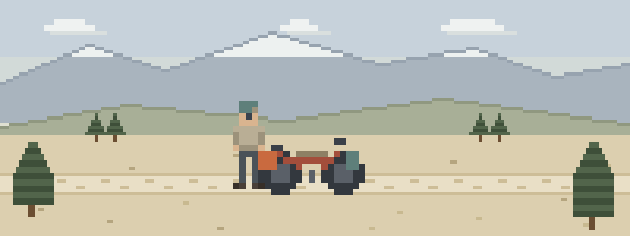

Thirty gravel miles from a clinic
- Washboard, then quiet. The front wheel washes out on a rated-easy descent and your partner’s collarbone gives a familiar crunch. The nearest town has one store, no clinic, and thirty gravel miles of distance.
- Hike-a-bike, sharp rock. A slip on the push opens a shin deep enough to matter. Direct pressure, held without peeking, beats everything else in the framebag.
- He clips back in. Your partner goes down hard, dusts off, and rides on. Two hours later he’s pale and slow on every riser — a pulse taken twice at the crash site would have told you sooner.
Route-planning for your brain
Load these five before the next overnighter:
- Patient Assessment — the post-crash check that catches what adrenaline is hiding
- Bleeding & Wounds — gravel, chainrings, and rock do sharp-object damage
- Musculoskeletal Injuries — collarbones and wrists are cycling’s oldest bill
- Evacuation — when the bail points sit forty miles apart, decide like it
- Kits & Preparation — what makes the cut in a framebag kit when every gram argues
Then pressure-test it
Interactive scenarios — one decision at a time, tempting mistakes included, debrief at the end:
- The Rider Down — a crash, a broken leg, and every decision that follows
- The Guy Who’s Fine — the crash your partner almost walks away from
- Stop Peeking — pressure that holds while you want to look
The certification question, honestly. “Wilderness First Aid” isn’t a regulated credential. No government body defines what a WFA card means — it means whatever the company that printed it says it means. What counts in front of a patient is whether you can do the work. This course teaches the work, free, and issues a record of completion — not a certificate, and we won’t pretend otherwise. Self-supported racing makes you the medical plan by rule. If an event, club, or guiding outfit wants a provider’s card, take that class — this record of completion isn’t one, but you’ll show up ahead of the syllabus. If nobody requires you to hold a card, what you need are the skills, not the laminate.
What this is
Fifteen lessons, a 40-question knowledge check, sixteen practice scenarios, a printable field reference card, and a kit checklist. Free, no account, nothing recorded about you, source on GitHub. It teaches decision-making, not hands-on skill — practice the hands-on parts on a real, padded, complaining friend.
Same trails, different speeds: canyoneers & slot canyon explorers · disc golfers on wooded & remote courses · backpackers & thru-hikers